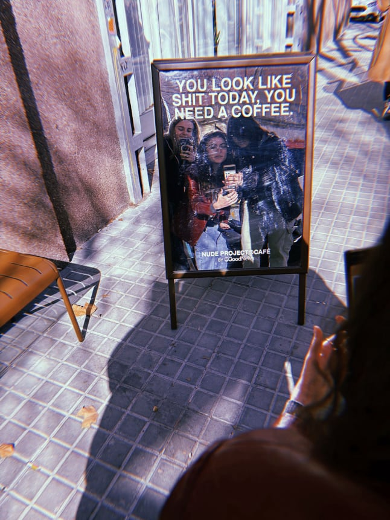
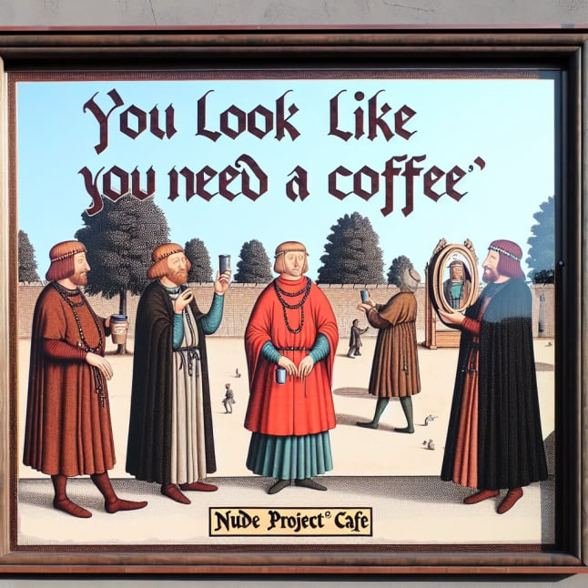
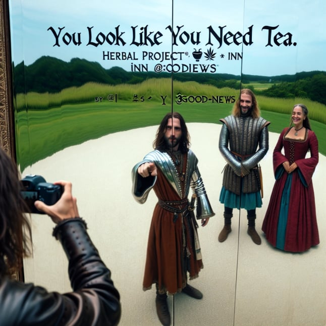

Dottod AI Camera
In this exercise, we used an AI interface developed by the collective Dottod to reimagine given images through prompts. We played with different pictures, exploring how AI would interpret specific elements. For example, when asking the AI to imagine our pictures as if they were set in the middle ages, it was interesting to see how AI converted modern elements of our pictures that did not exist back then. Phones were transformed into coffee cups, women were imagined as men, paper bags were turned into alms purses, robots were portrayed as stone tools. We also noticed that it was hard for AI to recognise trash, as it was always reinterpreting it as the non-degraded equivalent.
This exercise gave us valuable insights on the logics behind AI systems, the "art of prompting" and the weight of words as well as the bias resulting from over-representation in training datasets. This helped me acknowledge the benefits and limitations of generative AI and led me to reevaluate and reflect on my interactions with such AI tools, especially when used in the creative process.


